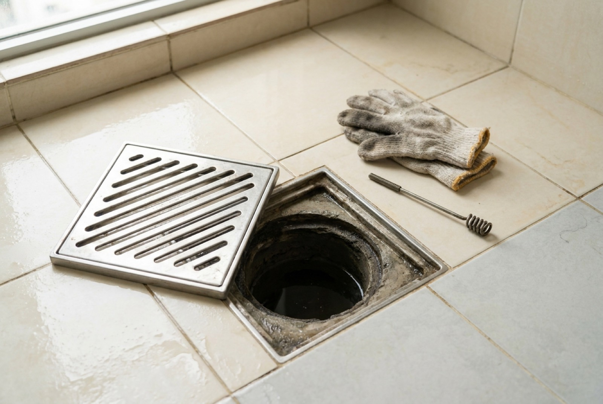

Floor trap & drain choke in Singapore: causes, clearing & cost

Water pooling around the bathroom grating, a kitchen floor trap that gurgles and drains in slow motion, or worse — water rising out of the trap instead of going down. Most floor trap and drain chokes in Singapore flats come down to three culprits: hair bound with soap scum, cooled kitchen grease, or renovation debris that set hard inside the pipe. As a 2026 guide, clearing a floor trap runs about S$80–150, rodding the line behind it S$120–250, and high-pressure jetting S$250–500. This guide covers what to try yourself, what not to pour down there, and the one symptom that means it isn't your pipe at all.
What a floor trap is, and why it chokes
The grating in your bathroom or kitchen floor is the visible top of a floor trap — a U-shaped bend in the pipe just beneath it that permanently holds a small pool of water. That water is a seal. It's what stops the smell of the discharge pipe coming back up into your flat.
Two consequences follow from that design, and they explain nearly every problem people have with floor traps:
- Because the bend is the low point, anything heavier than water settles there. Hair, grit, sand, food, grease. That's why the trap chokes before the straight run of pipe does.
- Because the seal is just standing water, it evaporates if the drain isn't used. A guest bathroom left alone for a few weeks starts smelling of sewage — not because it's blocked, but because it's dry.
Getting the diagnosis right matters, because those two problems have opposite fixes.
The four causes we actually find
1. Hair and soap scum (bathrooms)
The classic. Loose hair catches on the grating's underside and in the bend, soap and shampoo residue binds it into a dense mat, and over months it stops behaving like a filter and starts behaving like a plug. Slow, gradual onset — the drain gets a bit worse each month until one day the water sits.
2. Grease and food waste (kitchens)
Cooking oil goes down the sink hot and liquid and cools inside the pipe into a waxy coating. Rice, coffee grounds and vegetable scraps stick to it. Over time the pipe's internal diameter shrinks. Singapore kitchens see this fast because of how much we cook with oil. The kitchen sink choke guide covers the sink side of this in detail — this page is about the floor trap and the drain line beyond it.
3. Renovation debris — the worst one
This is the choke that costs real money. During renovation, tilers and painters wash tools and buckets into the nearest floor trap, and cement slurry, grout, tile adhesive and skim coat go straight down the pipe. It doesn't wash through — it sets. Chemicals won't touch it and a plunger won't move it; it needs mechanical rodding or jetting, and in bad cases the pipe has to be opened.
If you are renovating now, this is a five-second prevention: cover every floor trap and tape it down before wet trades start, and insist tools are washed at the service yard, not in the bathroom. We treat it as standard practice on our own sites — see how it fits into the sequence in the HDB toilet renovation guide.
4. Nothing at all — a blockage downstream
Covered in its own section below, because it changes who pays.
Your pipe or the shared stack? The one test that matters
Before you call anyone, work out which side of the boundary the problem is on. The tell is direction of flow:
- Water drains away slowly from your fixtures → the blockage is between your fixture and the stack. That's your pipework.
- Water rises up out of the floor trap, or surges when a neighbour uses their bathroom → the blockage is below your connection, in the shared discharge stack. That's common property.
The second case is worth spotting early. Pipes serving only your flat are generally the owner's responsibility, while shared discharge stacks and common drainage are handled by the town council or managing agent. Paying a plumber to rod your own line when your line isn't blocked achieves nothing. Ask your immediate neighbours whether they have the same symptom — if they do, that settles it.
General guidance on flat owners' maintenance responsibilities is published by HDB, and Singapore's used-water network is managed by PUB. For anything involving a leak into the unit below, treat it as an inter-floor leak matter and get it documented before repairs start — our bathroom waterproofing guide covers why those disputes hinge on the cause.
What to try yourself, in order
For a slow-draining trap inside your own flat, work up in this sequence. Stop as soon as it drains properly.
- Lift the grating and clear it by hand. Most gratings simply lift out or unscrew. Wear gloves. In perhaps half of bathroom cases the mat of hair is sitting right there and the whole job is thirty seconds.
- Use a hair-removal strip. A cheap plastic barbed tool goes deeper into the bend than fingers do and pulls the mat out whole. Far more effective than anything you pour.
- Flush with hot — not boiling — water. Hot tap water softens grease. Boiling water can distort or loosen the joints on PVC pipework, so don't tip a kettle down there.
- Plunge it. Cover the trap with a cup plunger, add enough water to seal the rim, and pump firmly. Block any nearby overflow or second drain first, or the pressure escapes there.
- Try an enzyme drain treatment overnight. Slow and gentle, but genuinely useful for grease and organic build-up, and it won't attack your pipes.
What not to do
- Don't reach for caustic soda first. Strong drain chemicals generate heat, can degrade older PVC joints and seals with repeated use, and are hazardous to handle. They also tend to pool on top of a solid plug rather than clear it.
- Never mix drain chemicals — with each other, or with bleach. That combination can release dangerous gas in an enclosed bathroom.
- Don't force a metal rod hard into a bend. You can punch through a corroded pipe or crack a fitting, converting a $120 choke into a hacking job.
- Don't keep dosing a pipe that isn't responding. If two attempts haven't moved it, it's set solid or it's downstream — either way more chemical won't help.
What professional clearing costs
Indicative Singapore market figures for 2026, residential:
| Service | Typical price (SGD) | When it's used |
|---|---|---|
| Floor trap clearing (manual / plunger) | $80 – $150 | Hair, scum, surface debris |
| Mechanical rodding / snaking of drain line | $120 – $250 | Choke sits beyond the trap |
| High-pressure water jetting | $250 – $500 | Grease-packed or cement-set pipes |
| CCTV pipe inspection | $200 – $400 | Recurring chokes, unknown cause |
| Floor trap replacement / re-seal | $150 – $350 | Damaged trap, failed seal, corroded grating |
| Opening up pipework (hacking + reinstate) | Quote on site | Last resort — tiles and waterproofing affected |
Most residential chokes are resolved at the lower end. The jump to jetting or hacking almost always traces back to renovation debris, which is why prevention during a renovation is worth more than any of these numbers.
Smell with no choke: the dry trap
If the drain runs freely but the room smells, you almost certainly have a dry trap. The water seal has evaporated and odour from the discharge pipe is coming straight up through an empty bend.
The fix is a mug of water down the trap. It works within minutes. For a bathroom that genuinely goes unused for long stretches, top it up monthly, or add a small amount of cooking oil on top of the water — the oil floats and slows evaporation considerably.
If the smell survives refilling, the trap or its seal may be cracked, or there may be an unsealed penetration nearby, and it's worth having someone look at it properly.
Keeping it clear
- Fit a hair catcher over every bathroom floor trap. A few dollars; removes the single most common cause outright.
- Never pour cooking oil down any drain. Let it cool, wipe it into the bin.
- Cover and tape floor traps during any renovation — the highest-value prevention on this list.
- Flush each trap with hot water weekly, especially kitchen ones.
- Use rarely-used bathrooms occasionally, or top up the seal, to keep the trap wet.
- Deal with slow drainage early. A drain that's slightly slow is cheap to clear; one that's fully blocked and backing up is not. The same logic applies to a dripping tap — small plumbing problems don't stay small.
Frequently asked questions
How much does it cost to clear a choked floor trap in Singapore?
About $80–150 for a straightforward floor trap clearing, $120–250 for mechanical rodding of the line behind it, and $250–500 for high-pressure jetting on a stubborn or grease-packed pipe. A CCTV inspection for recurring chokes adds $200–400.
Why does my HDB floor trap keep choking?
Repeat chokes mean something is still in the pipe, not just the trap. Usually hair bound with soap scum, hardened kitchen grease, or cement and grout washed down during a renovation. Renovation debris is the worst — it sets hard and won't respond to plunging or chemicals.
Water is backing up out of my floor trap — what does that mean?
Rising water points to a blockage downstream of your flat in the shared discharge stack, not in your own pipework — especially if it surges when a neighbour uses their bathroom. Report it to your town council or managing agent.
Can I use caustic soda on a choked floor trap?
Sparingly if at all. It generates heat, can damage older PVC joints with repeated use, is hazardous to handle, and usually just sits on top of a solid plug of hair or cement. Mechanical clearing is safer and works better. Never mix drain chemicals with each other or with bleach.
My bathroom smells but drains fine — why?
A dry floor trap. The water seal that blocks odour has evaporated. Pour a mug of water down it and the smell goes within minutes. A little cooking oil on top slows future evaporation in rarely-used bathrooms.
Is the choke my responsibility or the town council's?
Pipes serving only your flat are generally the owner's; shared discharge stacks and common drainage are the town council's or managing agent's. If your neighbours have the same symptom, or water is rising rather than draining, it's common property.
Getting it done by RK E&C
RK E&C is a Singapore-registered renovation and handyman company (UEN 202442767D) clearing floor traps, drain lines and kitchen chokes in HDB flats and condos island-wide. Because we also do tiling, waterproofing and reinstatement, if a choke does turn into opening up pipework, the same team closes it back up properly — tiles, grout and waterproofing made good, not left for someone else. We diagnose before we quote, and give a fixed price before starting. Browse our other guides for the rest of the flat.
Send a short video of the drain and your postal code via our contact form or WhatsApp — a ten-second clip of how fast the water goes down usually tells us what we're dealing with.
Drain backing up?
Send a short video of the floor trap and your postal code. We'll tell you whether it's your pipe or the shared stack before you pay anyone.
Prices are indicative of the Singapore market in 2026 and not a quotation. Responsibility for shared discharge stacks and common drainage rests with your town council or managing agent — confirm before commissioning works.